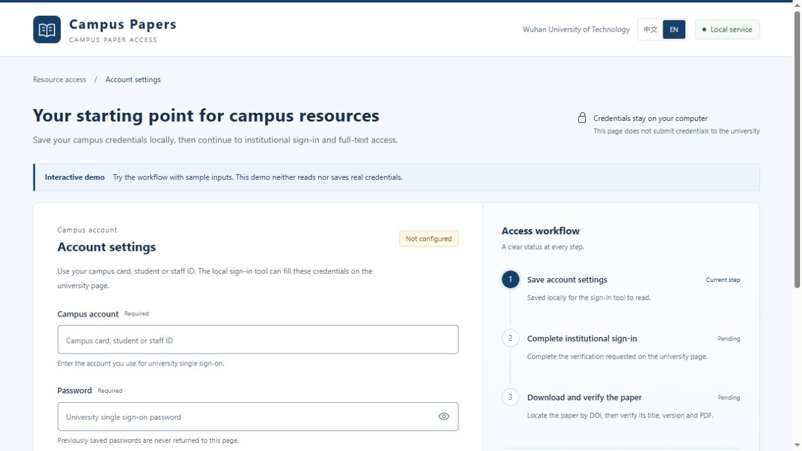

三个阶段，状态分明
- 01
本机配置
凭据保存在本机私密文件，页面不返回已保存的账号密码。
- 02
学校认证
沿用学校浏览器会话，验证码、扫码及二次验证由本人完成。
- 03
下载核验
核对 PDF 结构、题名、DOI、版本与哈希，记录来源和文件位置。
适合日常科研的门户界面

本机启动
Python 3.10+，配置页面仅用标准库。使用期间保持终端运行。
python campus_portal.py
# demo / 界面演示
python campus_portal.py --demo